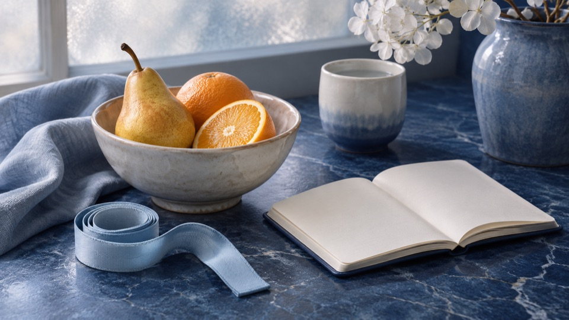
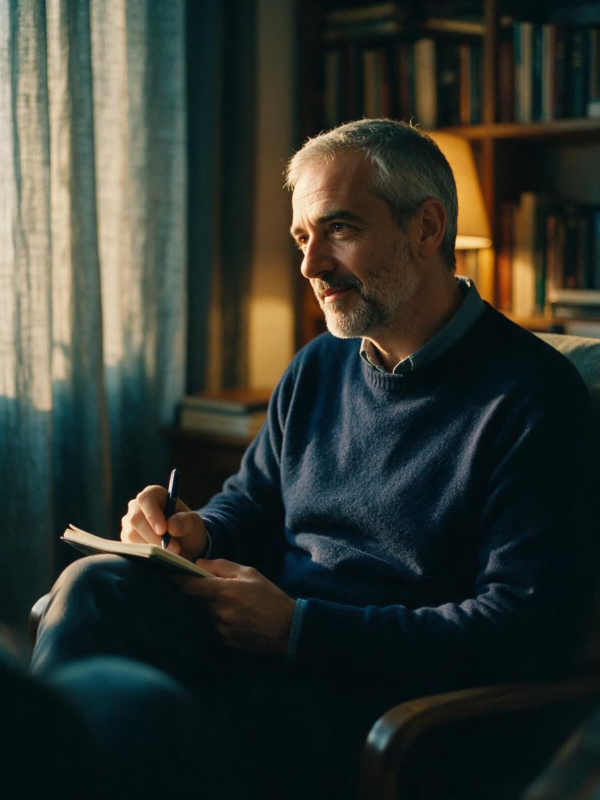

01
General & urgent care
General medicine, child care and common conditions
Online care Real conversations. Clear next steps.
No matching services.
Try a service, such as mental health or test requests.Your life, our starting point
Life doesn’t pause when you need care. We make it easier to speak to a doctor, understand your options, and get back to being you. A conversation that fits your life, wherever it finds you.
From everyday health and mental wellbeing to specialist support.
Pay per consultation, with the price shown before you book.
A place to start.
A clearer way forward.
General medicine, child care and common conditions

Psychology, psychiatry and ongoing support

Nutrition and weight-loss consultations

Find the right specialist for your needs
Fitness and health assessments with a doctor

Clinical advice and treatment review

Doctor consultations for test requests and treatment renewals
Example prices are confirmed per country before launch.
See a doctor today.
Keep it all together after.

Choose your doctor and connect from a comfortable place.
Find a consultationKeep your visits and next steps together in your patient account.
Create your accountNo surprises. No rush.
A real conversation.
At a time that works for you.
Pay per visit.
No subscription.

Choose a service and a registered clinician. Check the language, availability, and price before you book.

Join your consultation by secure video. Talk through your questions, your history, and what matters to you.

Your clinical summary, and anything your doctor decides to issue, is available through iMED, Carevia’s clinical system.
Experienced. Qualified. Here for you.
General & family care

Space for a conversation
A more focused perspective
Portraits illustrate the care experience.
The Carevia approach
A conversation with space for your questions, your concerns, and what matters most to you.
Frequently asked questions
A little clarity before your first visit.
Adults aged 18 and over can create an account. Parents and legal guardians can add children and other dependants and book on their behalf. You need to be in a supported country at the time of your visit.